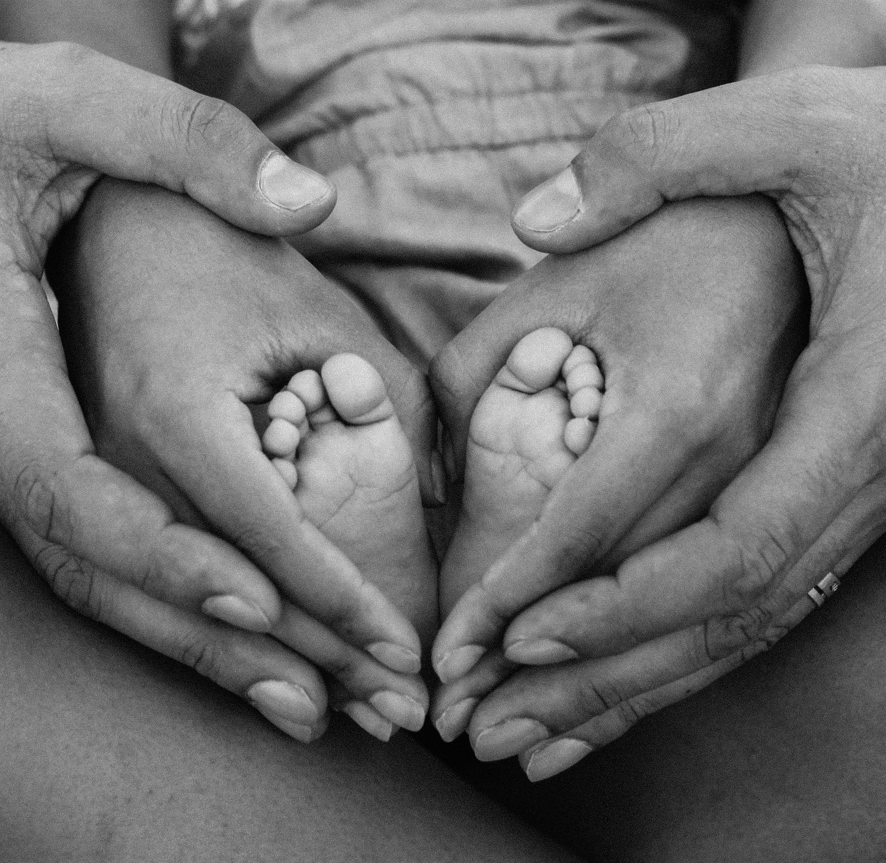

The adoption procedure goes through several stages. The adoptive parents prepare the necessary documents for entry in the register of the Ministry of Justice (MOJ). Their file is examined by the Intercountry Adoption Council at the Ministry of Justice and a referral is made to adopt a child depending on the characteristics of the child that the adoptive parents wish to adopt. The term to receive a referral depends on the age of the child, their state of health, etc. After receiving the referral, the adoptive parents travel to Bulgaria to have personal contact with the child for a period of 5 working days. The personal contact with the child is extremely important for building the emotional bond between the adoptive parents and the child. After the adoptive parents submit the necessary documents to continue the procedure, the Minister of Justice gives consent for the adoption of the child. The file is then sent to the court that allows the adoption. The second visit of the adoptive parents to pick up their adopted child lasts between 4 and 10 days.
